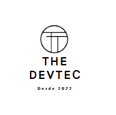
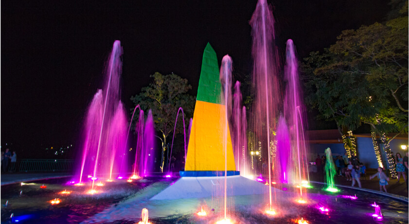

Find Your Point
Login
Cadastre-se
Favoritos
Eventos
Inicio
Fale Conosco

Marco das Três Fronteiras
Foz do Iguaçu - PR
Conheça agora
Marco das três fronteiras
-
Foz do Iguaçu, PR
Horário de Funcionamento
Terça a Domingo - 15hrs ás 21hrs.
Categorias
Divertido
Passeio
Consumo
Local
Av. Gen. Meira, s/n - Jardim Eldorado, Foz do Iguaçu
Descrição
O marco das três fronteiras é um obelisco feito de pedra. Essa cena emociona o turista, que pode ver Brasil, Argentina e Paraguai tão próximos um do outro.